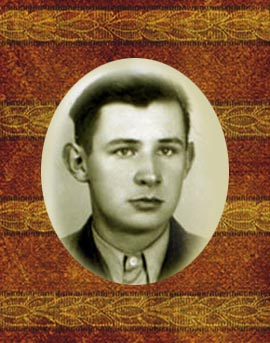
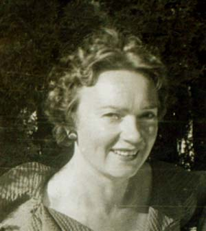
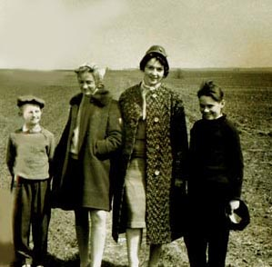
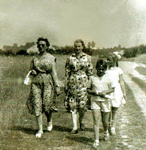
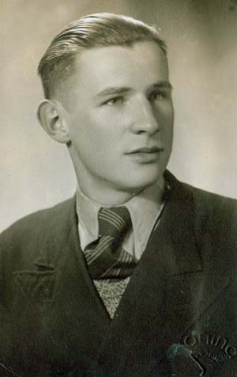

Zdzisław Sawicki

Antonina
Antonina z córką Małgorzatą i synami.
Antonina, Zofia Kowalik, córka Antoniny - Małgorzata i syn Zdzisław.

Antonina
Zdzisław Sawicki urodził się 23.01.1921 roku w Grabkach Dużych. W latach 40. ukończył gimnazjum w Kielcach, a następnie rozpoczął studia w Krakowie, na Wydziale Leśnictwa Uniwersytetu Jagiellońskiego.
Był postacią niezwykle malowniczą. Jego humor i inteligencja były legendarne. W krakowskiej rodzinie Zdzisława - u sióstr jego ojca Antoniego - krążyło na jego temat wiele anegtod. Przypomnę dwie z nich.
Jak każdy student, Zdzisław starał się zaoszczędzić na rzeczach zbędnych, by aktywa wykorzystać na coś przyjemnego. Do utrapień ówczesnych żaków należało pranie. Zdzisław zakupił więc sporo damskich pończoch, jakie zakładał na nogi i nosił tak długo, aż stopy się zabrudziły. Wtedy odcinał trefne końcówki, wiązał pończochę gumką i znów miał czyste skarpetki. I tak do skończenia pończochy.
Zdzisław
Pewnego dnia Zdzisław zawitał do swych zamożnych ciotek na Barską 13. Krewne rozpaczały nad wychudłym stydentem, starały się nakarmić go na zapas, ale z równą troską odniosły się do jego garderoby. Szczególnie uważnie przyjrzały się koszuli. Zasugerowały, że dobrze by było ją odświeżyć. Zdzisław ochoczo przyjął propozycję, doniósł jeszcze kilka egzemplarzy. Po kilku dniach przyszedł, by je odebrać. Jakież było jego zdziwienie, kiedy skonstatował, iż ciotki (a raczej ich służące) zamieniły jego koszule na jakieś inne.
- Ciociu - tłumaczył - to nie moje koszule. One są białe, a ja miałem szare...
Zdzisław był mężczyzną niezwykle atrakcyjnym - wysoki, przystojny, wykształcony, wesoły i inteligentny. Nic zatem dziwnego, że ożenił się z równie atrakcyjną kobietą.
Antonina i Zdzisław
Antonina Żyndrul była lekarką. Odznaczała się niezwykłą urodą, miłym usposobieniem i seredcznością. Mimo tego ich małżeństwo nie było udane.
Zdzisław zmarł 30.01.1982 roku w Skarżysku Kamiennej, gdzie mieszkał. Tam też został pochowany.